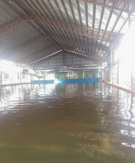
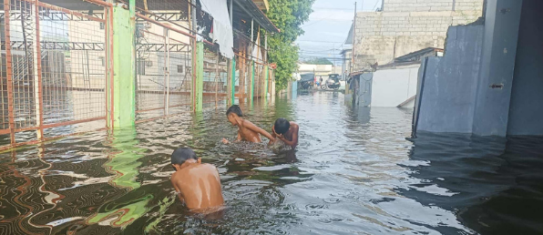

FLORENCE NABONG
Ako ang isa sa mga sitio leader ng Control at nagsimulang rumesponde noong Hunyo 2022. Noong dumaan ang tatlong bagyo noong 2025, naalala kong nilubog ang aming bahay kaya’t kinailangan naming iangat ang aming mga gamit upang hindi masira. Pagkatapos humupa ng baha, pinataasan ko ang semento ng aming tahanan upang makabalik kami sa aming normal na pamumuhay. Bukod sa paglilingkod sa barangay, ako rin ay isang mananahi, may maliit na tindahan, at may palaisdaan.

Hindi ko malilimutan ang lakas ng hangin sa gitna ng mga bagyo. Mabuti na lamang at natapos ang aming patrol bago ito lumakas. Pagdating namin sa barangay, agad naming inilipat ang mga internally displaced person mula sa evacuation site patungo sa kalapit na paaralan upang matiyak ang kanilang kaligtasan. Ngunit pag-uwi ko, baha ang sumalubong sa aking bahay at wasak ang aming palaisdaan, naputol ang mga lambat at nakawala ang mga isda. Tulad ng iba, sa tuwing may pahinga sa patrol, umuuwi ako upang ayusin ang lahat. Sa bahay, pilit naming iniipon at inililigtas ang mga gamit na maaaari pang mapakinabangan, at kung minsan ay tumutulong din ang aming mga kamag-anak kapag may bagyo. Ginagawa ko ang lahat upang balansehin ang oras sa bahay at sa barangay. Patuloy ang paglilingkod habang tinatantya ang aking kakayahan.
Alam kong mahirap, ngunit naniniwala akong dapat kong ipagpatuloy ang paglilingkod. May mga araw na ayaw ko nang bumangon at muling lumusong sa baha na halos walang tulog, ngunit tulad ng tawag ng tungkulin, bumabangon pa rin ako upang tumulong.

“ Naniniwala ako na sa makabuluhan na mag-iwan ng legasiya bungad sa pagtulong sa kapwa natin, kaya ako nag bolunter. ”
Kami ang nagbabantay sa gabi at sa oras ng krisis, ngunit dapat ding maging disiplinado ang mga residente sa paggawa ng tamang hakbang tuwing baha. Lalo na sa Control, kung saan ang aming lugar ang pangunahing sumasalo at kumokontrol sa daloy ng tubig mula sa ilog. Maraming eksperto na ang dumating at nagbigay ng mga mungkahi, ngunit sa huli, ipinagpapasaDiyos ko na lamang ang lahat dahil hanggang ngayon, wala pa ring naibibigay na mas maayos na solusyon sa flood control mula sa pambansang pamahalaan.